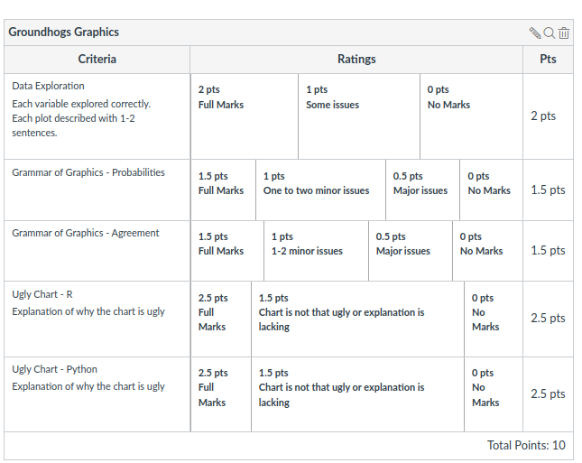
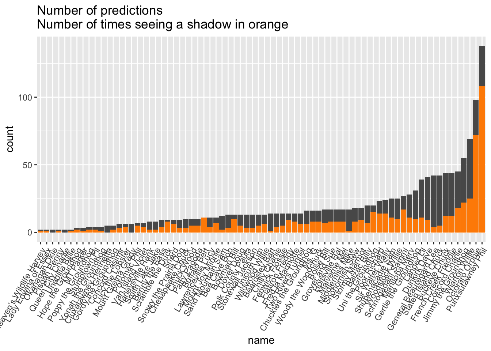
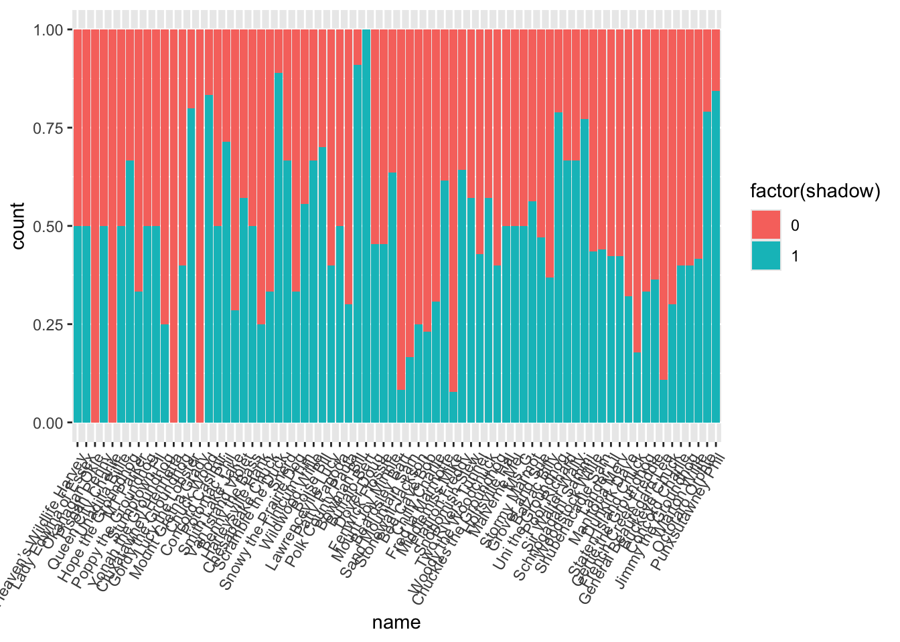
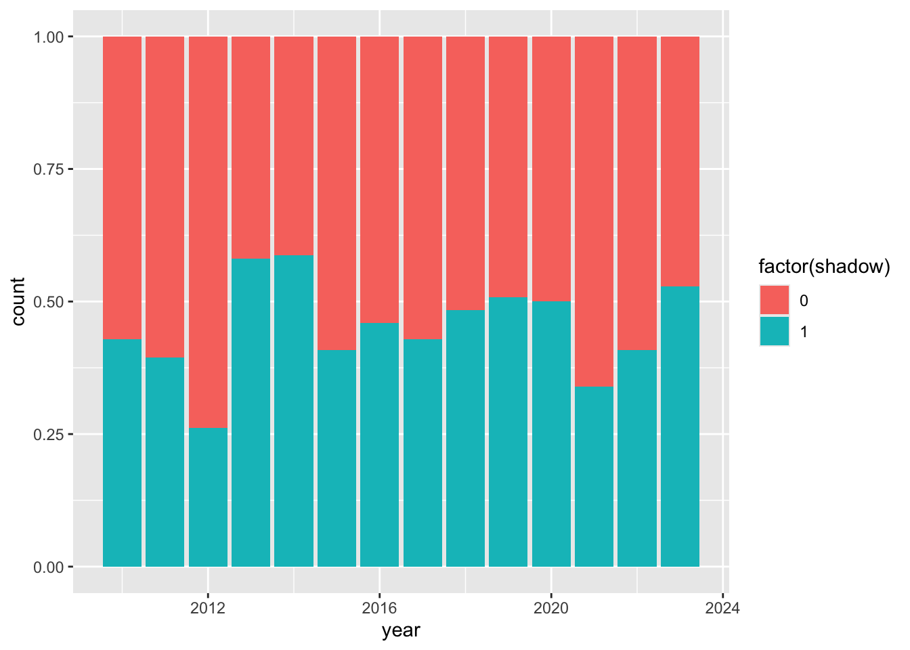

library(tidyverse)
groundhogs <- read.csv("https://raw.githubusercontent.com/stat-assignments/eda-groundhogs/97ab0e01b64aa3a1749247983a9b05a0c30b5c0c/groundhogs.csv")
groundhogs %>% ggplot(aes(x = active)) + geom_bar()
textbook for reading quiz
trouble-shooting in class
work time in class
examples in class
talking with classmates
ask questions
starting homework early, think about it during the week
look things up: textbook, resources outside the class (videos, other articles)
check homework before class to see if there are immediate questions
More clarity -
How does homework tie in with requirements?
clearer materials
Sample solution for homework
Ask more questions
Practice coding
Do readings earlier, try to absorb more information from readings
Be more present in class/pay better attention
Homework #5 due date: Thursday night (11:59 pm)
All subsequent due-dates for homework assignments will be Thursday night
Keep due-dates for readings and quizzes on Tuesday
Plan for Thursdays: - if there are questions on the current homework assignment, work on that, - start on the new assignment
How does the homework tie to the readings?
Working on skills: how to make graphics
Work on concepts: what are mappings, and how do they effect the conclusions
Work on presentation: what are more effective ways of presenting information

Part I: Make visual summaries for two new data sets and think about mappings
Part II: Use your knowledge to create the worst!
Make charts for all variables that are listed by name:
groundhogs.csv
predictions.csv
activelibrary(tidyverse)
groundhogs <- read.csv("https://raw.githubusercontent.com/stat-assignments/eda-groundhogs/97ab0e01b64aa3a1749247983a9b05a0c30b5c0c/groundhogs.csv")
groundhogs %>% ggplot(aes(x = active)) + geom_bar()
This is a barchart of the variable active, the variable is mapped to the x axis, the count for each bar (corresponding to the height of the bars) is mapped to y. Finding: Very few (2) groundhogs are not active.
Answer the following two questions using charts. Explain your chart, and explain how it answers the question.
Do different groundhogs have different probabilities of predicting 6 more weeks of winter?
How much do North American groundhogs tend to agree on their predictions?
Do different groundhogs have different probabilities of predicting 6 more weeks of winter?
predictions <- read.csv("https://raw.githubusercontent.com/stat-assignments/eda-groundhogs/refs/heads/main/groundhog-predictions.csv")
predictions %>%
mutate(name = reorder(factor(name), name, length)) %>%
ggplot(aes(x = name)) + geom_bar() +
geom_bar(aes( weight = shadow), fill = "darkorange") +
theme(axis.text.x = element_text(angle = 60, hjust = 1)) +
ggtitle("Number of predictions\nNumber of times seeing a shadow in orange")
What about missing values in the shadow variable?
How do we need to change the previous chart?
predictions <- read.csv("https://raw.githubusercontent.com/stat-assignments/eda-groundhogs/refs/heads/main/groundhog-predictions.csv")
predictions %>%
filter(!is.na(shadow)) %>%
mutate(name = reorder(factor(name), name, length)) %>%
ggplot(aes(x = name)) + geom_bar(aes(fill=factor(shadow)), position = "fill") +
theme(axis.text.x = element_text(angle = 60, hjust = 1)) 
limitations: different groundhogs have made very different number of predictions (and for different years)
How much do North American groundhogs tend to agree on their predictions?
predictions %>%
filter(!is.na(shadow), year > 2009) %>%
ggplot(aes( x = year, fill = factor(shadow))) + geom_bar(position="fill")
For years since 2010 … in each year close to 50/50 shadow/noshadow prediction - that’s the least amount of agreement we can possibly get!
predictions %>%
filter(!is.na(shadow), year > 2009) %>%
ggplot(aes( x = year, fill = factor(shadow))) + geom_bar(position="fill")
But … when we color points by prediction, there seems to be regional agreement
predictions %>%
filter(!is.na(shadow), year > 2011) %>%
ggplot(aes( x = long, y = lat, colour = factor(shadow))) + geom_point() +
facet_wrap(~year)
Is this perceived agreement real?
Which plot shows the most geographic agreement?
library(nullabor)
sample_year <- sample(2011:2023, 1)
data <- predictions %>% filter(year == sample_year, !is.na(shadow)) %>%
mutate(shadow = factor(shadow))
pos <- sample(16, 1)
lineup(null_permute('shadow'), data, pos = pos) %>%
ggplot(aes(x = long, y = lat, colour = shadow)) +
geom_point() + facet_wrap(~.sample) +
theme_bw()Warning: `rerun()` was deprecated in purrr 1.0.0.
ℹ Please use `map()` instead.
# Previously
rerun(19, method(true))
# Now
map(1:19, ~ method(true))
ℹ The deprecated feature was likely used in the nullabor package.
Please report the issue at <https://github.com/dicook/nullabor/issues>.
year was 2012 data is in 8
… maybe there is not even regional geographic agreement between the predictions.
Lineups help us to calibrate our eyes and distinguish random patterns from real visual findings.
Ugly Chart Challenge variant example from last semester’s graduate class
ggThemeAssistContinue working on homework assignment
Brainstorming: 🧠⛈️
{kind=link}
{kind=link}